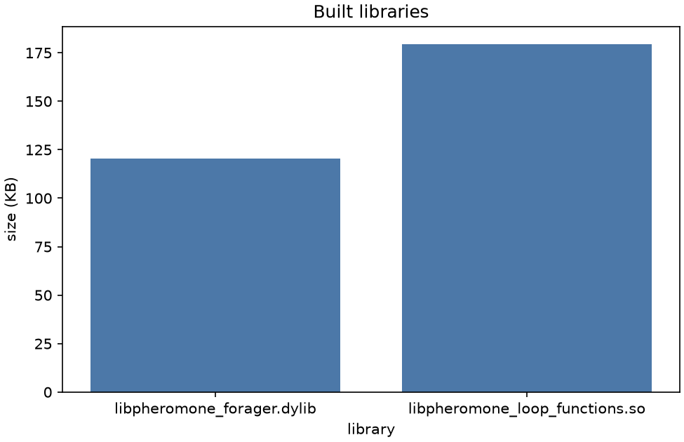

Stage report, step 1 of 8. Back to summary
| What | Build the controller and the loop functions with cmake and make. |
|---|---|
| Why | Milestone M2 needs real code before any real run. That serves goal G1. |
| Input data | Sources under src/ (C++17, ARGoS 3.0.0-beta59). |
| Output data | 2 libraries under src/build/. |
| Result (numbers) | libpheromone_forager.dylib 120 KB; libpheromone_loop_functions.so 180 KB. |
| Result (good or bad) | Good: both libraries exist. The build itself ran in the main session. |
| Status | ran (libraries found; compiler output is not saved) |
Figure and table

| library | size (KB) | sha256[:12] |
|---|---|---|
| libpheromone_forager.dylib | 120 | faccfbd1249f |
| libpheromone_loop_functions.so | 180 | 64a71c0087e3 |